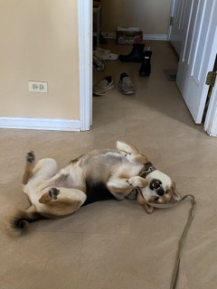
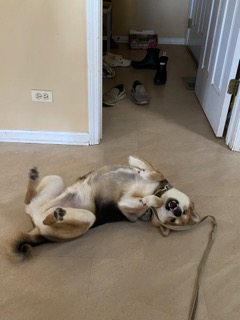

Pets
Rosie

Rosie is a small but super energetic dog. Whenever someone comes to the house she is very quick to run up and greet them. She loves to play fetch and will not leave you alone with her toys as she begs you to play with her.
Rosie is also a wonderful lap dog. If you sit on the couch she is quick to find a spot next to you. If you wear a blanket over your legs, you'll find her laying on your legs. She loves to cuddle and loves to be pet so she will always be right up on you.
Photo Gallery


Likes
- Treats
- Fetch
- Cuddles
Oreo

Oreo is a 20 pound pug terrier who is 6 years old. He loves following people around and always wants attention from anyone. He will play with any dog toys, especially the ones that you take from him. He likes going out on walks anytime of the day except when it is thunder storming, he will be running around the house trying to find a place to hide.
After every walk, Oreo will always get the zoomies, or he will want to play fetch. He has a set schedule everyday where he likes to eat early morning around 9am and at night at 7pm. Oreo is a very high maintenance dog who needs a lot of attention but will give you all the love and kisses.
Photo Gallery


Likes
- Fetch
- Chicken
- Walks
Jingle
Jingle is a domestic shorthair cat with a white chest and belly and a striped black and gray back. His paws are white and they look like mittens. Jingle loves going outside. He used to be an outdoor/indoor cat until we realized that he loved to get injured. Now, we take him on walks with a leash which he loves! Every time he sees me carrying the leash he goes crazy and meows to go out.
Jingle is very mischievous, he has gotten into many different accidents. His first accident was outside; a bee stung his paw and he cried all night long. The second one was ALSO outside, he got stuck on a tree for four days. Finally, he came back home one day with his tail bleeding and ripped out.
Photo Gallery


Likes
- Going on walks.
- Being pet.
- Eating treats.
Bacon Q Dog

Bacon Q. Dog is a 9yr old labradoodle. He prefers to spend his days lounging among the three different beds/couches that his family has gifted him. He enjoys a walk or two around the neighborhood, as long as he can pretend that he doesn't see any of the other animals to avoid the embarrassment of not wanting to admit he has no wolf-like skills in chasing them.
At night just as the rest of the family is ready to relax, Bacon suddenly wants to release all of his energy. He will place his toys on a mini couch and frantically drag the couch around, giving his toys "a ride." There is also a lot of rolling. Lots and lots of rolling.
Photo Gallery


Likes
- Belly rubs
- Playing tug-of-war
- Sneaking onto the couch
Terry

Terry is a playful and spirited dachshund that loves to play fetch with his bone or tennis ball. He loves wandering in forests and finding large sticks to take home. His favorite foods are kibble and peanut butter. Terry will run around frantically when it’s time to eat at home.
My family found Terry at a shelter and decided to adopt it. He was 4 months old and is now 8 years old. Terry knows how to swim, but we don’t tend to go often. Terry got poison ivy once; however, he quickly recovered and has been doing great since.
Photo Gallery


Likes
- Fetch
- Eating
- Belly rubs
Cheeto (Chicken)

Cheeto is a cat who likes to eat a lot and play a lot. He has an obsession with his grandpa (human) and tries to get outside every single day. If he isn’t causing problems, he is usually hiding in a seven foot tall cat tree and sleeping.
Another name for Cheeto is Chicken, because sometimes he sits very scrunched up and ends up looking like a rotisserie chicken. He was nicknamed this by one of his friends, and now he understands it as his own name. He is about six years old and still acts like a younger cat, despite being middle-aged.
Photo Gallery


Likes
- Treats
- Exploring
- My Dad
Bear

Bear is a lazy, food-loving dog that is sometimes playful. His favorite activity is lying in the sun on his side and lounging. He enjoys playing with his toys and loves to fetch them when you throw them, but eventually, he gets bored and just stops fetching them and lays down.
Bear is also scared of a lot of things. He doesn’t like water (showers and even rain) or getting his nails clipped, and he’s sometimes even so lazy that he’ll just stop walking and sit down until you turn around and go back home.
Photo Gallery
 



Likes
- Food
- Laying in bed
- Fetch